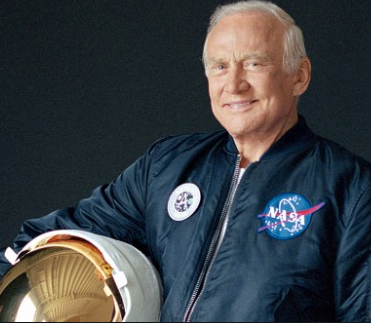
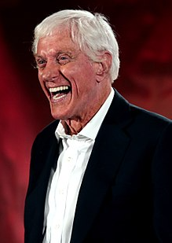

<center>
<H1>
    America the Old
</H1>
<H3>
    Identify the old American
</H3>
<H2>
    Bonus Question:
</H2>
<H3>
    Which two of these people share the same first and middle name?
</H3>
<H1>
    1:
</H1>

<br>
<H1>
    2:
</H1>

<br>
<H1>
    3:
</H1>

<br>
<H1>
    4:
</H1>

<br>
<H1>
    5:
</H1>

<br>
<H1>
    6:
</H1>

<br>
<H1>
    7:
</H1>

<br>
<H1>
    8:
</H1>

<br>
<H1>
    9:
</H1>

<br>
<H1>
    10:
</H1>


</center>

<!-- <html>

<head>
    <link href="./reset.css" type="text/css" rel="stylesheet">
    <link href="./pics.css" type="text/css" rel="stylesheet">
    <link href="./projectStyle.css" type="text/css" rel="stylesheet">
    <link href="./style.css" type="text/css" rel="stylesheet">
    <link rel="shortcut icon" type="image/x-icon" href="boat.ico">
    <link href="https://fonts.googleapis.com/css?family=Roboto+Mono&display=swap" rel="stylesheet">
    <script src="parkerCode.js"></script>
</head>

<body>
    
    
    <div style="height:100px">
    </div>
    <div class="top_row">
        <div class="menu">
            <div class="linkIsh linkIshSpecial" id="homeLink">home</div>
            <div class="linkIsh" id="contactLink">contact</div>
            <div class="linkIsh" id="projectsLink">projects</div>
            <div class="linkIsh" id="resumeLink">resume</div>
            <div class="linkIsh" id="bioLink">bio</div>
        </div>
        <div class="pic">
        </div>
        <div class="row">
            <a href="https://www.linkedin.com/in/parker-harris-04613b16/" target="_blank">
                <div class="linkedIn_pic">
                </div>
            </a>
            <a href="https://angel.co/parker-harris-2" target="_blank">
                <div class="angelList_pic">
                </div>
            </a>
            <a href="https://github.com/phillllymon" target="_blank">
                <div class="github_pic">
                </div>
            </a>
        </div>
    </div>
    <div id="mainTitle" class="title_text">
        
        Parker Harris
        
    </div>
    <div id="resume" class="resumeHidden">
        <iframe
            src="resume.pdf"
            width="975px"
            height="1150px"
        >
        </iframe>
    </div>
    <div id="bio" class="bioHidden">
        <div class="teaching_pic">
        </div>
        I'm a software developer with a background that also includes mechanical engineering and teaching. 
        I've taught middle and high-schoolers math, science, and philosophy and coached a fledgeling
        robotics team as they went to their first state competition. On the engineering side I've worked 
        for New York State improving building energy efficiency
        and designed custom tooling for the manufacture of large aircraft. 
        <br>
        <br>
        I thrive on tackling complex problems, especially in a cooperative environment. Effective technical 
        communication and problem solving is the common theme throughout my career of coding,
        engineering, and teaching. If something seems
        impossible at first or if others have tried and failed, I'm interested.
        <br>
        <br>
        <div class="sailing_pic">
        </div>
        In October I graduated from the super-rigorous coding bootcamp App Academy, where I learned Ruby, Rails, SQL,
        Javascript, and React. That experience was intense and rewarding. Despite my background in teaching, I did not
        think it was possible to learn so much in four months! I hope you take a minute to check out my projects.
        <br>
        <br>
        When I'm not coding I like to spend my time sailing, building boats, and playing the flute.  
        
    </div>
    <div id="projects_total" class="projects_total hidden_project">
    
        <div id="project_row" class="projects_header">
            <div id="checkMateyLink" class="project_name">CheckMatey</div>
            <div id="windWavesLink" class="project_name">Wind & Waves</div>
            <div id="dontDieLink" class="project_name">Don't Die Together!</div>
        </div>

        <div id="checkMatey" class="project_description hidden_project">
            <div class="checkMatey_pic">
            </div>
            <div class="project_links">
                <a href="https://checkmatey.herokuapp.com/#/" target="_blank">live</a>
                <div class="border"></div>
                <a href="https://github.com/phillllymon/checkMatey" target="_blank">github</a>
            </div>
            <div class="project_title">
                CheckMatey
            </div>
            <br>
            Who hasn't wished for a pirate-themed chess website?
            <br>
            <br>
            Inspired by
            chess.com, CheckMatey is a fully-functional online community
            for chess players with multi-player functionality as well as
            single-player games against the computer. There's also
            a community forum where you can share your chess or pirate-related
            thoughts with other players. You can even use the move-recording feature
            to share that new opening you just invented.
            <br>
            <br>
            If your
            opponent's not online when you want to play, just use the "invite a friend"
            feature to challenge your friend via email. If you're still
            online when your friend clicks the link, you'll automatically
            be put in a game together. Of course, if you prefer Tetris to chess,
            we've also got you covered.
            <br>
            <br>
            CheckMatey has a Ruby on Rails backend and a React & Redux frontend.
        </div>

        <div id="windWaves" class="project_description hidden_project">
            <div class="windWaves_pic">
            </div>
            <div class="project_links">
                <a href="https://phillllymon.github.io/Wind-Waves/" target="_blank">live</a>
                <div class="border"></div>
                <a href="https://github.com/phillllymon/Wind-Waves" target="_blank">github</a>
            </div>
            <div class="project_title">
                Wind & Waves
            </div>
            <br>
            Wind & Waves is an interactive sailing simulator that allows you to
            learn the basics of sailing a small boat while also investigating
            the various forces that make sailing possible.
            <br>
            <br>
            Under the hood, Wind & Waves features a physics model
            that combines forces on the sail, hull, and centerboard to calculate
            accurate, real-time boat motion. It even calculates rolling
            motion, incorporating a sailor whose weight moves
            automatically to balance the boat.
            <br>
            <br>
            All the physics modeling is coded in pure javascript. The display
            in HTML5 Canvas and components are rendered with React.
        </div>
        <div id="dontDieTogether" class="project_description hidden_project">
            <div class="zombie_pic">
            </div>
            <div class="project_links">
                <a href=http://dont-die-together.herokuapp.com/#/ target="_blank">live</a>
                <div class="border"></div>
                <a href=https://github.com/nairieberry/dont-die-together target="_blank">github</a>
            </div>
            <div class="project_title">
                Don't Die Together!
            </div>
            <br>
            Don't Die Together! is a top-down, multiplayer zombie survival game. You
            You start off with a pistol and, with zombies closing in from all sides, you
            must survive as long as possible. You can invite your friends to play in the
            same game with you, but be careful: the more players there are, the more zombies
            arrive!
            <br>
            <br>
            Don't Die Together! uses MongoDB on the back end and React on the front end. Multiplayer
            functionality is through Socket.IO. The game rendering uses HTML5 canvas.
            <br>
            <br>
            Other collaborators on this poject are
            <a href="https://www.linkedin.com/in/ryan-s-4bab01194">Ryan Sabik</a>,
            <a href="https://www.linkedin.com/in/wesley-tam-436b98127/">Wesley Tam</a>, and
            <a href="https://www.linkedin.com/in/ryan-sullivan-32080223/">Ryan Sullivan</a>.
        </div>
    </div>
    <div id="shortContent" class="short_content">
        <span class="black_text">Skills: </span>Ruby / Rails, Javascript, React, Redux, SQL, PHP, HTML / CSS
    </div>
    <div class="seattle_pic">
    </div>
    
    
</body>

</html> -->